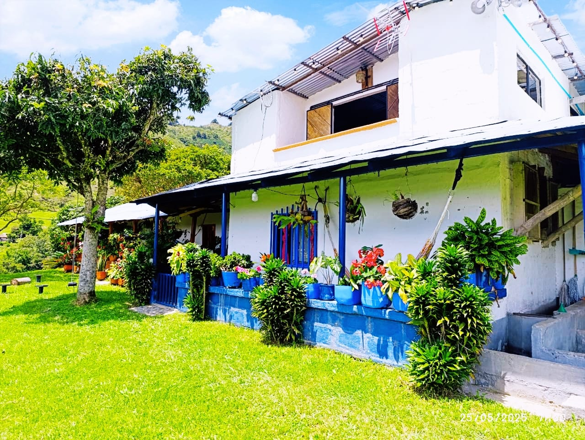
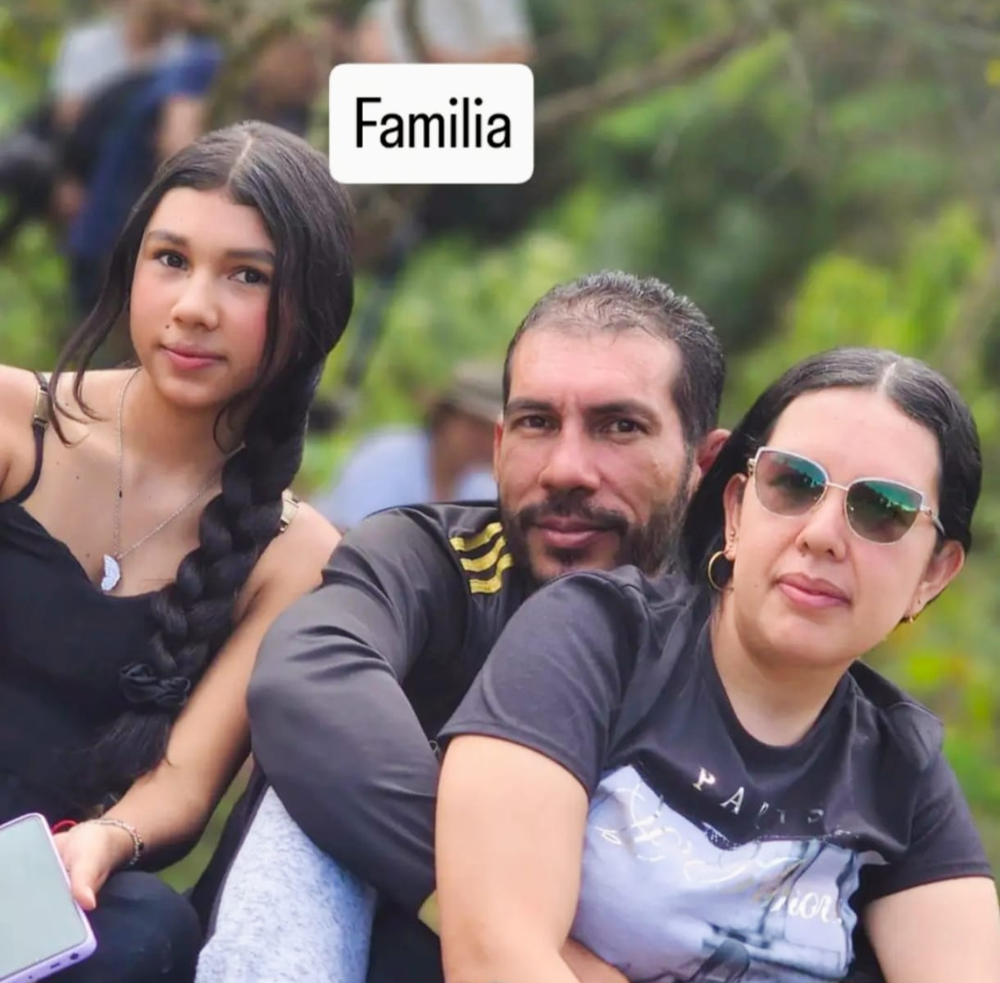

Misión
Ofrecer productos de excelente calidad y experiencias de turismo rural, con un servicio cálido y familiar.

En Finca El Chaparral somos un emprendimiento familiar comprometido con la tradición cafetera, el respeto por la naturaleza y la calidad de nuestros productos. Trabajamos con dedicación para ofrecer a nuestros visitantes una experiencia auténtica, donde puedan disfrutar del aroma del café, la miel natural y la tranquilidad del campo colombiano. A través de nuestras marcas Campan's Café y Campan's Miel, buscamos compartir el fruto de nuestro trabajo y resaltar el valor del campo, ofreciendo productos elaborados con pasión, responsabilidad y amor por la tierra.
La historia de Finca El Chaparral nace del esfuerzo, la dedicación y el amor por el campo. Con el paso de los años, la finca se ha convertido en un espacio donde la tradición cafetera y el trabajo en familia se unen para ofrecer productos de excelente calidad y experiencias inolvidables. Hoy, además de producir café y miel, abrimos nuestras puertas para que las personas conozcan de cerca la vida en el campo, disfruten de la pesca y compartan momentos especiales en un ambiente natural y acogedor

Ofrecer productos de excelente calidad y experiencias de turismo rural, con un servicio cálido y familiar.
Ser una finca reconocida por la calidad de nuestros productos, el turismo rural y el compromiso con el medio ambiente.